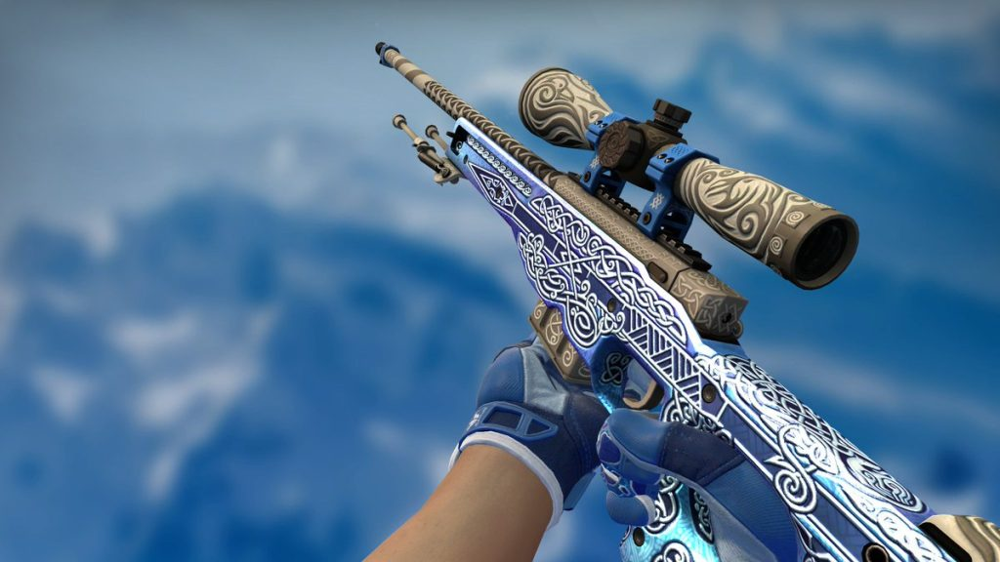

La historia del Counter-Strike: El nacimiento de una leyenda
Un Mod que Cambió el Mundo
Counter-Strike (CS) comenzó en 1999 como un mod de Half-Life, creado por Minh Le y Jess Cliffe. Este mod transformó un juego de disparos en una experiencia táctica por equipos que marcó el inicio de un fenómeno global.
Los Visionarios detrás del Proyecto
Minh Le y Jess Cliffe eran desarrolladores independientes apasionados por los videojuegos. Decidieron aprovechar el motor de Half-Life para diseñar un juego que combinara acción, estrategia y realismo.
La Fórmula del Éxito
La premisa de CS era simple: dos equipos, terroristas y antiterroristas, compitiendo en mapas con objetivos específicos, como plantar o desactivar bombas, rescatar rehenes o eliminar al equipo enemigo.
El Auge del Beta Testing
El primer beta de Counter-Strike fue lanzado el 19 de junio de 1999. Inmediatamente, la comunidad quedó fascinada, y el feedback constante de los jugadores ayudó a refinar el juego rápidamente.
La Adopción por Valve
Impresionada por el potencial del mod, Valve, la empresa detrás de Half-Life, adquirió los derechos de CS en 2000. Esto marcó un antes y un después, pues el juego recibió soporte profesional y un lanzamiento oficial.
Counter-Strike 1.0: El Llamado a las Armas
En noviembre del año 2000, Valve lanzó Counter-Strike 1.0 como un título independiente. Esta versión estableció las bases para lo que sería una franquicia inmortal en los videojuegos.
Mapas Icónicos que Definieron una Generación
Mapas como Dust, Inferno, y Nuke se convirtieron en símbolos del juego. Diseñados cuidadosamente, ofrecían escenarios equilibrados y tácticos que resonaron con la comunidad.
El Impacto de los Servidores Privados
La capacidad de alojar servidores privados permitió a los jugadores personalizar sus experiencias, añadiendo modificaciones, reglas únicas y mapas personalizados.
El Nacimiento de los eSports
Counter-Strike jugó un papel crucial en el desarrollo de los eSports. En torneos locales y mundiales, CS se estableció como uno de los títulos más competitivos de la escena.

Counter-Strike: Condition Zero
En 2004, Valve lanzó Condition Zero, un intento de introducir una campaña para un jugador en la franquicia. Aunque no tuvo el éxito esperado, dejó su huella como una evolución interesante.
El Salto a Counter-Strike: Source
Con la llegada del motor Source, Valve lanzó Counter-Strike: Source en 2004. Este título mejoró gráficos, físicas y animaciones, pero dividió a la comunidad entre los fanáticos del clásico y los del nuevo título.

Counter-Strike: Global Offensive (CS:GO)
En 2012, Valve dio un paso adelante con Counter-Strike: Global Offensive. Este título modernizó la franquicia, atrayendo a nuevas generaciones y revitalizando su popularidad.
Skins y Economía Virtual
CS:GO introdujo el sistema de skins, que permitió a los jugadores personalizar sus armas. Esto creó una economía virtual multimillonaria, revolucionando la industria del gaming.
Torneos Internacionales de Prestigio
CS:GO se consolidó como un pilar de los eSports, con torneos como los Majors, donde los mejores equipos compiten por millones de dólares en premios.
La Importancia de la Comunidad
La comunidad de jugadores y modders ha sido vital en la evolución de Counter-Strike. Aportaron ideas, mapas y contenido que mantuvieron vivo al juego durante décadas.
Problemas de Seguridad y Trampas
A pesar de su éxito, Counter-Strike no ha estado exento de problemas. El uso de trampas y hacks ha sido un desafío constante para Valve, que implementó VAC (Valve Anti-Cheat) para combatirlos.

La Influencia en Otros Juegos
Counter-Strike ha influido en innumerables títulos de disparos en primera persona, estableciendo estándares de diseño y mecánicas que se replican hasta hoy.
Los Clanes y la Competitividad Local
En la época dorada de los cibercafés, los clanes locales llevaron la competitividad a un nivel personal, fomentando la camaradería y rivalidad entre jugadores.
Los Streamers y el Renacimiento del Juego
La llegada de plataformas como Twitch permitió a CS:GO ganar popularidad entre nuevas audiencias, consolidándose como un espectáculo tanto para jugadores como para espectadores.
La Cultura de los “Headshots”
La frase "headshot" se convirtió en sinónimo de Counter-Strike, representando la precisión y el nivel de habilidad que el juego exige a sus jugadores.
El Sistema de Rangos Competitivos
El sistema de rangos introducido en CS:GO agregó una capa de profundidad al juego, incentivando a los jugadores a mejorar y subir en la clasificación.
El Efecto Global de Counter-Strike
Counter-Strike trascendió barreras culturales, uniendo a jugadores de todo el mundo bajo una misma pasión por el combate táctico.
La Nostalgia del CS 1.6
A pesar de las nuevas versiones, Counter-Strike 1.6 sigue siendo un clásico amado por veteranos que recuerdan los días de partidas en LAN.

El Legado de Minh Le y Jess Cliffe
Los creadores de CS dejaron una marca indeleble en la industria, demostrando que un mod bien diseñado puede cambiar el curso de los videojuegos.
El Contenido Generado por Usuarios
Mapas, skins y modos personalizados han mantenido fresco al juego durante años, mostrando la creatividad de la comunidad.
El Desarrollo de Habilidades Reales
Counter-Strike ha sido elogiado por fomentar habilidades como la comunicación, el trabajo en equipo y la toma de decisiones bajo presión.
El Debate sobre la Violencia en los Videojuegos
Como mucho>s shooters, CS ha sido objeto de controversia por su temática violenta, aunque los estudios han demostrado que no fomenta comportamientos agresivos.
Counter-Strike 2: Rumores y Expectativas
Con los años, la comunidad ha especulado sobre un posible CS2, ansiosa por ver cómo Valve puede reinventar una franquicia tan icónica.

Un Juego que Sigue Evolucionando
A pesar de su antigüedad, Counter-Strike continúa recibiendo actualizaciones y soporte, manteniéndose relevante en un mercado competitivo.
Un Ícono Intemporal
Counter-Strike no es solo un juego; es un fenómeno cultural que ha definido generaciones de gamers, consolidándose como un ícono de los videojuegos.